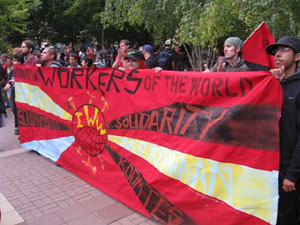

Anti-Capitalist Bloc @ the RNC: An I.W.W. Report
Submitted on Wed, 10/01/2008 - 2:17pm
 by Kdog, x359209
During the first week of September 2008, Republican Party delegates gathered in St. Paul, Minnesota for the Republican National Convention (RNC) - the media spectacle and corporate sleaze-fest that completes their nominating process. An army of armor-clad riot police, National Guard, and private security with their humvees, rubber bullets, and tear gas protected them. FBI-assisted sheriff's raids at more than a half-dozen activist homes and organizing centers in Minneapolis-St. Paul sought to hinder opposition. But thousands of protestors still took to the streets to emphatically reject the Republicans' vicious policies of war, discrimination, and attacks on the working-class and poor.
Among the more important mobilizing efforts against the RNC was the Anti-Capitalist Bloc, an initiative of the Industrial Workers of the World (I.W.W.) union - Twin Cities General Membership Branch. The Anti-Capitalist Bloc was conceived as an organizing front for the week of the RNC that would unite those anti-capitalist activists with an orientation toward organizing. The Anti-Capitalist Bloc issued a "Call" and adopted a set of "Solidarity Principles" that made clear our opposition to not only the Republican party but the whole system of capitalism. Ten other groups signed on including three other I.W.W branches. Approximately 1800 full-color posters with the Anti-Capitalist Bloc message were distributed over the course of the week.
But as Wobblies, we know that words are not enough, and so a series of events, actions, and contingents were organized by the Anti-Capitalist Bloc.
SATURDAY AUGUST 30th
Police Raids and preemptive arrests: In the days leading up to the RNC, police, sheriff and federal officers conducted raids on several activist's homes and organizing centers. The main target were members and supporters of the the anarchist umbrella group the "RNC Welcoming Committee". The Welcoming Committee promoted and provided logistical support for a strategy of shutting down the RNC through direct action blockades around the convention. Eight core meembers of the group were charged with felonies and accused of "terrorism" by the authorities. The activist Convergence Center rented by the Welcoming Committee was raided by the police, who detained, photographed and ID'd the dozens present. The media largely went along with the police story, presenting tires in garages, grey water sceptic systems, and kerosene as dangerous weapons.
One raid in St. Paul hit the home of a large group of activists including one of the main Anti-Capitalist Bloc organizers. Police with assault rifles raided and detained several activists present, searched the house and copied computer hard drives. The police eventually backed off, releasing everyone without charge, after a large number of media, legal observers and activists arrived on the scene.
Benefit Concert: A benefit concert organized by the Anti-Capitalist Bloc at the Bedlam theater featuring the Rude Mechanical Orchestra, the Brass Messengers, and Mic Crenshaw brought folks together in the wake of the police house raids and raised needed funds for the defense of protesters and the I.W.W.'s active and public campaign at Starbucks.
SUNDAY AUGUST 31st
I.W.W. Starbucks Ra1ly: The next day, the day before the RNC officially opened, approximately 75 supporters of the I.W.W.'s local Starbucks campaign rallied. One of the worker-organizes who had been fired for union activity had just won re-instatement. Rank & file activists from AFSCME, CWA, MAPE, SEIU, and Wobblies from across the country spoke, chanted and waved picket signs. Labor Professor, author, and activist Peter Rachleff spoke. A heavy police presence monitored the rally.
At the close of the rally, an invitation was extended to those assembled to accompany the I.W.W. barista back to his first day of work at the Mall of America Starbucks. In an orderly fashion, so as not to provoke police, folks left the picket signs, bought tickets and boarded the Light-Rail Train from Minneapolis to the Mall of America. Aboard the train, wobblies and their supporters, spirts high, belted out "Solidarity Forever" and other songs, and engaged the other riders who wondered about the police presence.
The Mall of America is located in Bloomington, Minnesota, a suburb of Minneapolis. At the first LRT stop in Bloomington, a contingent of riot-police stopped the train and engaged the I.W.W. about our intentions at the Mall. When it was made clear to Bloomington PD that we were merely accompanying our Fellow Worker back to his job and that we did not intend to picket, protest, riot, or engage in any of the other disruptions being bandied about the media, they allowed us to continue.
At the Mall of America, it was a different story. As the train pulled in to the Mall station, dozens of fully-equipped riot police were visible. When the doors opened, an armored cop stood in front of each door preventing anyone from leaving the train. Attempts to negotiate were fruitless. No one, either with the I.W.W or passengers completely separate were allowed to leave. Police at first refused, then finally relented to, our demand that a woman and her child be allowed to exit as the woman was having a diabetes emergency.
Mall officials were calling the shots and the police were enforcing them. Eventually, the doors simply shut and the train pulled out of the station back toward Minneapolis to the chants of "Bullshit!Bullshit!" from the unionists and the other passengers alike.
Although we did not enter the Mall in force as planned, we were able to mobilize a good group of people in support of the I.W.W. Starbucks campaign. The action highlighted the crucial role workplace organizing must play in anti-capitalist strategy - something that would not have otherwise happened during the RNC protests.
The reaction of the police at the Mall reinforced our perspective: The police answer to property, not "public safety"; the bosses fear workers organizing as much as they do protests and blockades on the streets.
"Labor Day" MONDAY SEPTEMBER 1st
Anti-Capitalist Bloc: The first day of the Convention, Monday September 1st, Labor Day (and so a legal holiday in the U.S.) was always going to be the biggest day of protest against the RNC. Both the major permitted march (March on the RNC and Stop the War) and the anarchist-inspired blockade strategy were scheduled for Labor Day.
The Anti-Capitalist Bloc contingent in the permitted march was conceived as a visible organized contingent promoting the politics of working-class direct action anti-capitalism to the mass of anti-war, labor, immigrant rights, and other demonstrators. In this it was quite successful.
Over 300 people eventually joined in with the Bloc over the course of the march. The Bloc was led by Red & Black "DIRECT ACTION AGAINST CAPITALISM" banners in front, on the right by the new Twin Cities I.W.W. banner proclaiming "SOLIDARITY" in 5 languages (English, Spanish, Hmong, Somali and Finish - Ojibwe or Dakota will be added soon), and flanked on the left by Solidarity & Defense's tri-lingual (English, Spanish, Arabic) banner against the raids on immigrants. A "NO WAR BUT THE CLASS WAR" banner took up the rear. This "wall of banners" system kept the Bloc cohesive and visible, and gave participants a sense of security. A 5-person "tactical-team" from the local committee was in place to make emergency tactical decisions should that have been neccesary.
The Bloc was loud and feisty. "Capitalism? NO! Patriarchy? NO! Racism? NO! Revolution... Yeeeaah!" "No War, But Class War!" "No Justice, No Peace! Police off the Streets!" "Ah!An-ti!Anticapitalista!" were some of the chants that caught attention. At different intervals during the march the Anti-Capitalist Bloc would come to a halt to give short speeches and allow space to seperate in front of us, a countdown would ensue and then the Bloc would charge forward to the cries of "Revolution!" The Bloc recieved compliments from many observers of differing political stripes. One union staffer offered this gem: "The IWW...you guys are like the black bloc of the labor movement."
The full-color poster/statement of the Anti-Capitalist Bloc was distributed to 1000-1200 people at the March on the RNC. The professional look of the poster helped the Bloc stick out and was incentive to onlookers and demonstrators to hang on to it. This helped on a day when they were being inundated with literature from the full spectrum of the Left. Many of the participants asked for extra-copies to bring home, or share with friends - a sign that the Anti-Capitalist Bloc will retain some memory within the movement. The poster was worth the high cost and should be seen as part of any succesfull future major mobilization.
The Bloc consistenly announced its intention to be a space where all anti-capitalists could be present including people with kids, elders, and people with differing abilities. It was not significantly different in composition from previous efforts however - majority young white guys with a bit of a Black Bloc look. This was by no means exclusively the case - lots of women participated and a few people of color. Only a couple young children and a few older people marched with the Bloc. The Bloc made a serious effort to vocally oppose all oppression, but clearly our movement still has a lot to overcome before it will look like the whole working-class, especially its most exploited and oppressed sections. Interestingly, a clear majority of those that marched with us were not members of the I.W.W. or any of the other endorsing groups.
The Anti-Capitalist Bloc organizers stressed on multiple occasions that the purpose of this Bloc was not to engage in physical confrontations with the huge numbers of heavily armored police and Guard, but to help expand the base and popularity of anti-capitalist ideas and methods. At the same time it was stressed that we were not opposed to or in competition with those attempting to blockade the Convention. The logic of the Anti-Capitalist Bloc was embraced by all the participants - even among those that had clearly come ready to rumble.
As the march finished up back at the state Capitol, the Anti-Capitalist Bloc came to an official end. A meeting was convened for those who wished to attempt to go back into downtown St. Paul and unite with the the blockades. A large percentage of those on the Bloc plus some others headed back down. One estimate put the returning group at 200.
The returning march group soon met a sizable police force who eventually began shooting tear gas, rubber bullets, bean bags, and concussion grenades at the crowd. Police eventually gave up trying to detain the whole group, picking off a few for arrest while most escaped, ending one of the largest stand-offs of the day.
SEIU: Across the Mississippi River within view of the clouds of tear gas and confrontation, SEIU was holding a huge "Take Back Labor Day" concert with Billy Bragg, Mos Def, Steve Earle, Atmosphere, and others. Concerned that the concert crowd (nearly equal to the size of the whole anti-war march) may be tempted to join the fray, police blockaded the main bridge into downtown St. Paul. Hopefully some of the performers and concert goers wondered why SEIU had decided to schedule their concert to conflict with the march, and even more shamefully, become the only union listed as one of the corporate sponsors of the Republican National Convention its self.
TUESDAY, SEPTEMBER 2nd
Poor People's March: The next day, Tuesday September 2nd the Anti-Capitalist Bloc had called for another contingent in the Poor People's Economic Human Rights Campaign March for Our Lives. This march was much smaller than the previous day's - approximately 800 at the start, but included a more significant percentage of working poor and people of color. The Anti-Capitalist Bloc gathered 50 around the I.W.W. banner - including wobblies from several states, Solidarity & Defense from Michigan, a couple NEFACers (and Jeff Monson the anarchist UFC mixed martial arts fighter!).
Riot police again had a heavy presence and made several provocative forays into the rally to nab individuals ID'd in actions the day before, or in one case to grab a flag pole deemed larger than city regulations allowed. Several undercover/plainclothes police were quite obvious in the crowd as well.
The Poor People's march weaved it's way through downtown St. Paul. The Anti-Capitalist Bloc marched and sang (at one point the Manu Chao lyrics "We are the workers/and we are marching/bella ciao, bella ciao, bella ciao!") Another 300-500 posters were distributed by membeers of the Bloc. The march continued up to the state Capitol lawn, where the "Ripple Effect" concert (featuring Dead Prez, Anti-Flag, Michael Franti, and others) was winding down. The police were refusing to allow Rage Against The Machine to perform as the concert permit had expired. Members of Rage Against The Machine encouraged the hundreds of young people there to join the march. They mostly did, and the march easily tripled in size.
The march permit held by the Poor People's Economic Human Rights Campaign did not prevent police from again opening up with their full barrage when demonstrators ended up back outside the Xcel Energy Center where the RNC speeches were happening.
Truckers Fuel Protest: The Anti-Capitalist Bloc did not end up participating in the independent truckers fuel protest that we had endorsed and promoted (other than one SDS/IWW member from North Dakota who was a key organizer of the truckers action). There had been both logistical and political problems. None of the IWW OTR truckers were able to make it - originally we had thought a few were coming - and the main Truck Driver organizers had been insistent that all vehicles in their convoy prominently fly the American flag. In the abscence of actual revolutionary unionist truckers present for the action, we did not feel we had the capacity to challenge the American flag "rule" for the convoy.
The convoy ended up being much smaller than hoped for and, like the other actions of the week, heavily policed.
WEDNESDAY SEPTEMBER 3rd
Anti-Capitalist Bloc meeting: The next day two dozen participants in the Anti-Capitalist Bloc gathered at a meeting hosted by the Students for a Democratic Society (SDS) chapter at Macalester College. Besides SDS and the I.W.W., members of Solidarity & Defense, NEFAC, Class Action and WSA were also present. Discussion ranged from "big picture" analysis of the current situation to an evaluation of the RNC action that week to more general info-sharing on the respective groups' activities and plans. While obviously incomplete, the meeting was an important opportunity for folks who'd been running around together for several days to take a moment to introduce each other and exchange ideas and experiences.
Rage Against the Machine: While their efforts to take the stage at one of the free outdoor concerts of the week were consistently snubbed by the police, Rage Against the Machine did play a scheduled show Wednesday night at the Target Center in Minneapolis (at $60.00 a ticket!). When the crowd of 10,000 emptied the arena at the end of the show, police in riot gear were there to meet them. Many of the Rage fans chanted defiant lyrics at the police and hundreds occupied the street around the Target Center, many of them sitting down to get arrested civil-disobedience style.
Whatever one thinks of Rage Against The Machine's sound or their place in the music industry, there is no doubt that they are treated as dangerous by the police. Their political message and attitude has struck a nerve with a sizable fan-base who seem willing to follow Rage's lead out into the streets. Tom Morello, the ground-breaking guitarist for Rage, explicitly promotes the I.W.W. with his solo side project, the "Nightwatchman".
THURSDAY SEPTEMBER 4th
No Peace for the Warmakers: On the final day of the RNC, while John McCain prepared to give his acceptence speech, the final official action opposing the convention also took place. Organized by the local Anti-War Committee (one of the main groups behind the Monday anti-war march also) the demonstration was boldly titled "No Peace for the Warmakers". Some 800 protestors left the State Capitol grounds in an unpermitted march toward the Xcel. Individuals from the Anti-Capitalist Bloc were present but were not organized into any contingent this time. Riot police blocked every path toward the Convention and succeeded in sealing in the march several times long stretches of time. Despite the march's theme, the march organizers were not preopared for direct action confrontations with the police, but did encourage a massive sit-in to block one bridge (already blocked by police). The stand-off ended when police moved to make mass arrests, and one final time attacked with pepper spray, tear gas and rubber bullets.
SOME CONCLUSIONS The Anti-Capitalist Bloc @ the RNC was a succesful intervention by a small revolutionary workers organization and our allies in the week of protest and activity in our Cities. The hard work achieved results. The Anti-Capitalist Bloc was able to articulate a popular revolutionary militancy through a number of different types of events that involved hundreds and communicated to thousands more.
At a time when the State was seeking to take advantage of some of the weaknesses of the RNC Welcoming Committee's strategy and base, the Anti-Capitalist Bloc conveyed in a non-sectarian way another approach for radicals.
While the number of people from endorsing groups that came from out of town was small, those that came contributed significantly to the collective success. In this way it was an important continuation of the new spirit of collaboration among the groups and militants of the "Red & Black" revolutionary anti-authoritarian movement.
We welcome comments, clarifications, questions, and criticisms.
Solidarity Forever!
anticapbloc@iww.org
Links:
Anti-Capitalist Bloc
Call, Points of Solidarity & poster:
Benefit Concert:
http://vimeo.com/1649987 (RMO at March on the RNC)
(Mic Crenshaw)
I.W.W. Starbucks Ra1ly:
"Labor Day":
http://vimeo.com/1657220 (ACB starts at 2:53 S&D banner
visible)
SEIU corporate sponsor of RNC:
Poor People's March:
Final Day: